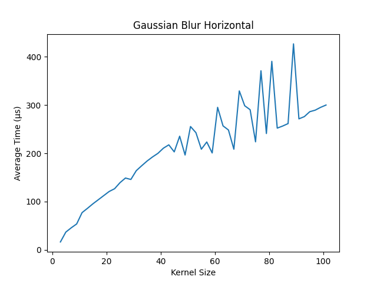

Abstract
Gaussian Blurring has numerous applications in various fields, including gaming, photography, video processing, and medical imaging, to name a few. Here are some examples of how Gaussian Blurring is used in different areas:
Gaming: Gaussian Blurring is used in gaming to create realistic depth-of-field effects, which can simulate the way our eyes focus on objects in the real world. For example, in a first-person shooter game, blurring the background can make the player feel like they are focusing on a distant object. Another example is motion blur, which can simulate the way objects appear blurry when they are moving quickly.
Photography: Gaussian Blurring is commonly used in photography to remove noise from images and to create soft-focus effects. It can also be used to smooth out skin tones in portraits and to create a bokeh effect, where the background of an image appears out of focus.
Video processing: Gaussian Blurring is used in video processing to remove noise and to smooth out video frames. It is also used to create special effects, such as blurring out a face in a video to protect someone's identity.
Medical imaging: Gaussian Blurring is used in medical imaging to remove noise from images and to enhance the contrast between different structures in the image. For example, it can be used to enhance the edges of a tumor in a CT scan or MRI image.
However the time complexity
This project compares Gaussian Blurring implemented in both CPU and GPU architectures, and demonstrates the speed benefits of a separable 1D kernel versus a 2D kernel. Time complexity and performance measurements are used to analyse the differences between the two kernels on both the CPU and the GPU. Results show that a separable 1D kernel is faster than a 2D, and this proves that the speed benefits associated with a separable 1D kernel in image processing tasks extend across different hardware implementations.
Dataset
This project uses the standard dataset for image proessing, sourced from here. The dataset consists of 24 images, which include grayscale, 256 bit color and 512 bit color of each unique image.
Technologies Used -
- OpenCV - For reading and writing images
- OpenMP - For parallelizing the CPU implementation
- CUDA - For parallelizing the GPU implementation
Methodology
CPU -
- The 2D kernel is first generated and then applied onto the image as a convolution.
- For parallelizing the CPU implementation, OpenMP
#pragma parallel forcompiler directive is used along with shared data to speed up. The separable kernel was not implemented for the CPU because, regardless of the implementation, the process is very slow as compared to GPU
GPU -
2D Kernel -
- First the kernel is generated on the host (CPU).
- Then the image is loaded on the host.
- The image is then copied to the device (GPU) using OpenCV API.
- The kernel is copied to the device using
cudaMemcpy(). - An output image is created on the GPU with the help of OpenCV API.
- The blocks and grids are created, and the Convolution kernel is called with the required parameters.
- Synchronization of GPU threads takes place to ensure no race conditions during stress testing.
- The output image is copied back to the host (CPU) using OpenCV API.
- The GPU memory is freed using
cudaFree()and the images are freed using OpenCV API.
Separable Kernel (1D) -
- First a 1D kernel is generated on the host (CPU).
- The image is loaded on the host and then uploaded to the device (GPU).
- an outpuit image is created on the GPU with the help of OpenCV API.
- first a convolution is applied along the horizontal axis (x-axis) on the original image. This output is stored in a temporary image.
- Now a convolution is applied along the vertical axis (y-axis) on the temporary image. This output is stored in the final output image.
- The final output image is downloaded to the host.
- The GPU memory is freed using
cudaFree()and the images are freed using OpenCV API.
Results -
Plots -
CPU -

Comparing Single Threaded vs Multi Threaded
Average Speedup: 7.31 times
GPU -
Separable Kernel - 
Comparing 2D Kernel vs Separable Kernel -
Average Speedup : 25.72 times
Comparing CPU vs GPU implementations -
Average Speedup : 2461.73 times
Inference
Gaussian Blurring is a popular technique used in image processing to remove noise and smooth an image. In this project, the technique is implemented using both CPU and GPU computing.
The CPU implementation first applies a 2D blur to the image, which is a computationally intensive task that involves convolving the image with a Gaussian kernel. This is done using a nested loop structure that applies the kernel to each pixel in the image.
To improve the performance of the CPU implementation, a multithreaded version using OpenMP is also implemented. This allows the kernel to be applied to multiple pixels simultaneously, reducing the total time taken to blur the image.
The GPU implementation uses CUDA to accelerate the Gaussian blurring process. The image is transferred to the GPU, and the kernel is applied to each pixel in parallel using a grid of threads. This greatly reduces the time taken to blur the image compared to the CPU implementation.
Finally, a separable kernel is used to further improve the performance of the GPU implementation. This involves breaking the Gaussian kernel into two 1D kernels, which can be applied separately in the x and y directions. This greatly reduces the number of computations required to apply the kernel, resulting in very high speedups.
In summary, Gaussian Blurring using CPU and GPU is a computationally intensive task that can benefit greatly from parallel processing. By implementing a multithreaded version using OpenMP and a GPU version using CUDA, the performance of the algorithm can be greatly improved. Using a separable kernel further improves the performance of the GPU implementation, resulting in very high speedups.